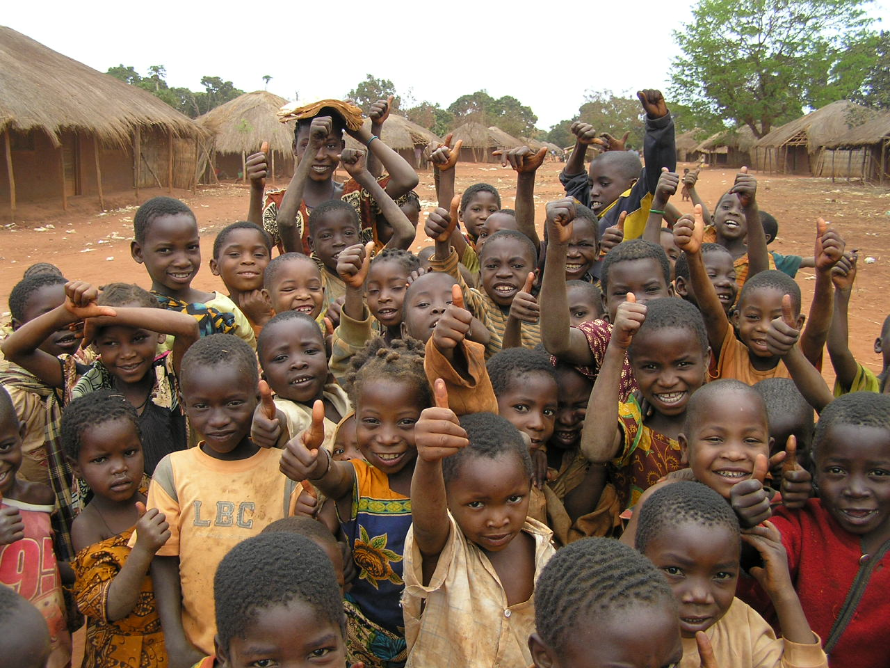

SOLIDARITEPARTAGE
L’association La Main du Cœur est née de la volonté de son fondateur André BERNHARD de concourir à améliorer la vie d’enfants démunis par la vie..

UN PETIT GESTE PEUT FAIRE BEAUCOUP DE CHANGEMENT
L’association fait en sorte de mener des actions en « circuit court » : l’aide apportée par les donateurs bénéficie directement à l’amélioration du quotidien des enfants..

LA PROTECTION ET LE L ACCOMPAGNEMENT
En 2018, La Main du Cœur est à l’origine de la création et devient partenaire de la structure “Le Rebond du Cœur” qui accueille, accompagne et insère des jeunes majeurs sortis du dispositif de la protection de l’enfance..